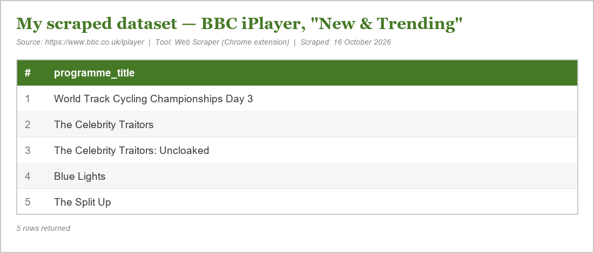
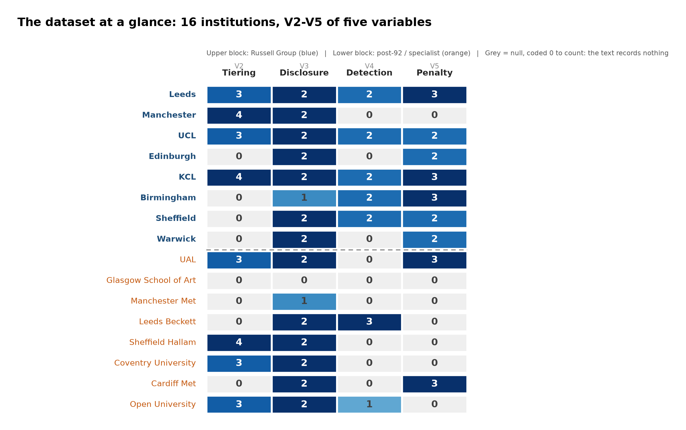
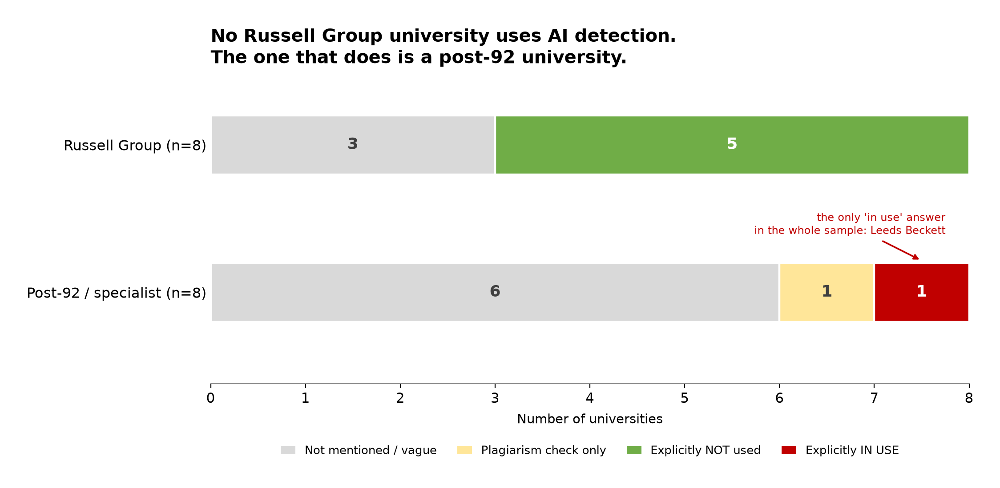
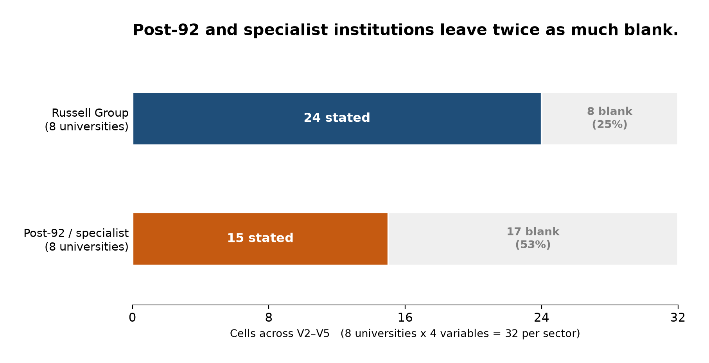
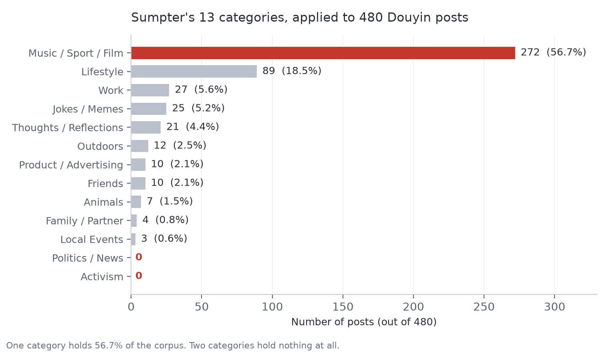

Hi, I'm Zhiqi Yao, a postgraduate student on the MA Digital Media programme at the University of Leeds.
This is my online portfolio, where I collect the work I create during my studies — websites, digital projects, and reflections on what I learn about digital media.
I love playing football and I spend a lot of time on social media like Douyin. This everyday experience made me curious about one question: how do algorithms decide what I see? This curiosity is what brought me to Digital Media.
This week, in my first workshop, I built my own web page using HTML and CSS, and published it online with GitHub Pages. Before this, I had only ever used websites — I had never thought about how they are made.
Two things surprised me. First, a web page is really two files working together: HTML gives the page its structure, and CSS gives it its style. Changing one line of CSS can completely change how the page looks. Second, publishing is not the same as saving. My page was not visible to others until I set up GitHub Pages correctly.
I also made a mistake that taught me something useful. When my website first showed a 404 error, I spent a long time thinking my account had been blocked. In fact, the problem was much simpler — I had typed the wrong address. This reminded me that, in digital work, checking the small details carefully is as important as understanding the big ideas.
This task connected to our reading on algorithms. Building a page myself made me realise that the internet is not a neutral space — it is made of choices, and now I am starting to understand how those choices are made.
This week I used the Web Scraper browser extension to build my first dataset, by scraping the BBC iPlayer homepage. I created a sitemap, defined a selector targeting the "New & Trending" section, and extracted the titles of five programmes.
The process taught me two things. First, a website is not a "given" object but an assembly of code. Scraping works by reading that code, and my selector had to target the exact HTML container in order to return clean data — a small mistake in the selector and I collected a cookie banner instead of programmes.
Second, and more importantly, I experienced the limitation the workshop kept returning to: scraping can only harvest what the code defines. I could collect the title of a programme, but the tool told me nothing about why the BBC chose to promote it, or how audiences experience it. The data arrived without context, and the meaning still has to come from human interpretation.
A technical struggle was also instructive. My scraper's export options would only flatten all the titles into one cell, or spread them across separate columns, rather than listing them one per row. Getting clean, analysable data meant knowing how to work around the tool's limits — which is itself a research skill, and a reminder that "raw data" is never quite raw.

Our task was to work as a small data analysis company and help a university understand how generative AI affects academic integrity. That question was far too broad to research in a week, so our group narrowed it to something we could actually check: how sixteen UK universities describe the rules students must follow. No survey and no interviews were allowed, so the only source was public policy text — which has the advantage that a reader can open every single cell and check it.
The most useful moment came from a mistake. Our first eight institutions were all Russell Group, and the finding looked clean: not one of them used AI detection software. At the time it read like an industry fact. It was a subset fact. When we added eight post-92 and specialist institutions, Leeds Beckett stated that it had introduced Turnitin's AI detection tool in 2023/24, and the conclusion reversed. What I take from this is that the boundary of a sample is the boundary of a claim: an argument can be internally correct and still only be about the cases you happened to choose.
The hardest step was turning a sentence of policy into a single number. Cardiff Met writes that detection methods "may be utilised", which is neither a use nor a refusal. Our coding frame had no category for "unclear", so the cell became a 0. That is not a weakness in the university; it is a weakness in our frame, and I only noticed it because we argued about that one cell three times.
I also had to accept what the method could not show. Coding silence as 0 leaves 53 per cent of the non-Russell-Group cells empty, but that figure can only be read as "the public text does not say", never as "the university does not care". Keeping those two sentences apart is part of the research rather than a disclaimer added at the end — and it is why the dataset answers what institutions state, not what students experience.

What I learned this week is that a chart is not a picture of data. It is an argument about what counts. We visualised the same sixteen institutions we had coded the week before, and every decision about form also decided what the audience was able to conclude.
The first decision was to keep the empty cells. In our heatmap a grey square means that the public text records nothing at that intersection — a null, not a zero. The easy option was to drop those rows so that the chart looked complete. We kept them, and the argument changed: an absence in a policy document is evidence about the institution, not a hole in our dataset. The cost is honest too, because coding a null as 0 puts "not regulated" and "regulated but never written down" into the same cell.
The second decision concerned grouping. With a Russell-Group-only sample, a stacked bar split by sector told a clean story: no detection anywhere. The grouping did not describe that story, it produced it. Sort the same rows alphabetically instead and the reversal disappears. I had assumed that categories were neutral containers for data; they are part of the claim.
The third decision was the caption. One of our charts shows 25 per cent against 53 per cent, which reads as a governance gap. It is a publication gap, because our data only records what institutions put on the open web. Writing "public text" into the title is an ethical decision rather than a wording preference, and I now think of captions as part of the analysis rather than decoration on top of it.
We also built a ranking of universities by strictness and then deleted it. The data could not support a ranking, and presenting one would have implied a judgement we had no evidence for. Removing something is a design choice as well.


Reading behind these two reflections: D'Ignazio and Klein (2020) Data Feminism; Gitelman and Jackson (2013) 'Raw Data' Is an Oxymoron; Feigenbaum and Alamalhodaei (2020) The Data Storytelling Workbook.
The workshop asked us to try to see how an algorithm understands us. For the final task we used David Sumpter’s method: take 32 accounts, the last 15 posts from each, and code every post into one of thirteen categories. I did this on Douyin. 480 posts, coded one at a time.
The result is that the table collapses. A single category — Music, Sport and Film — took 272 posts, 56.7 per cent of everything. Inside that one box were football highlights, NBA clips, esports, bodybuilding, piano covers, K-pop edits, anime and short dramas: nine different kinds of post, counted as one number. My first reaction was that Sumpter’s categories were too coarse. They are. But the bigger problem is that they were measuring the wrong thing. Those thirteen categories were designed for a platform used to record a life — family, work, friends, local events. Douyin is not that kind of platform. It is built for production. So the categories were describing what a post looks like, while the question I actually cared about was who was posting it.
Two categories came back as zero: Politics and Activism, out of 480 posts. I do not think this means that the people I follow do not care about politics. That zero is produced in three places at once: what the platform decides to show me, who I have chosen to follow, and my own method, which allowed fifteen posts per person and one category per post. I could not separate a zero I cannot see from a zero that is not there. This is where Gillespie’s definition became concrete for me. An algorithm is a procedure for “transforming input data into a desired output” (Gillespie, 2014, p.167) that “select[s] what is most relevant from a corpus of data composed of traces of our activities” (p.168). Once I had written my own coding rules, I was running a small version of that: I chose the input, the rule and the output. I was not looking at a platform’s judgement. I was making one.
The 2D axes then failed completely. In Family/Partner, 31 of my 32 accounts scored zero and the whole corpus held four such posts; Work scored zero for 27 accounts. Plotted against each other, nearly every dot sat on the origin. The reason sits in my sample: 24 of the 32 accounts are creators or media accounts, and only three are personal ones. That sample was not neutral either — it is a picture of what I scroll — so I added a column Sumpter does not have, account type. Creators then spend 10.7 of their fifteen posts in that one large category, personal accounts spend 7.0 in Lifestyle, and the difference between those two numbers is not a property of the posts. It is a property of who posted them.

What I took from this is that a category is not a container that data happens to fall into; it is an argument about what should count. Cheney-Lippold argues that our algorithmic identities are fluid but hold stable elements, because we do the same things again and again. What I counted for a week was the stable part, but it was a stable part of a feed, not of a person. The column that was missing said who this is, not what this is.
Reading behind this reflection: Gillespie (2014) The Relevance of Algorithms; Sumpter (2018) Outnumbered; Cheney-Lippold (2017) We Are Data; Benjamin (2019) Race After Technology.
This week our group built a detection bot. We were given five short excerpts and asked to estimate, for each one, the probability that it was generated by AI. Our bot, called ECHO, was given one rule: read in layers, and trust them in order. First how sources are used. Then whether the language refers to bodies, places and specific things. The argument last.
We scored the five excerpts at 8, 55, 15, 10 and 85 per cent. The lowest score went to a paragraph that cited a source at page level, including a quotation quoted second-hand with both page numbers present. That is exactly the detail a language model tends to smooth away, and the opening sentence was awkward and bodily in a way that read like a student. The highest score went to a paragraph that listed four sources in one sentence, none of them with a page number, all of them supporting a single abstract claim, and closed on three abstract nouns in a row. The middle score went to the hardest case: the structure was model-like, a theory applied neatly and closed with a stock phrase, but it contained a spelling error. The two signals pointed in opposite directions, so we left it at just above half.
The useful finding was what did not help us. The arguments barely carried any signal at all. In all five excerpts, a human and a model could have made the same argument; what separated them was how the text handled its sources and whether it was willing to be specific about the world. So ECHO is not a test for generation. It is a test for whether a piece of writing sounds like a student’s work, which is a very different thing, and the difference matters because the output is a number that could be used against a person.
I have now spent two weeks building small classifiers. In Week 6 I coded 480 posts into thirteen boxes and watched the boxes describe the wrong object. This week I built a bot that codes sentences into a probability and, again, found that the output describes a style rather than a cause. The structure is the same in both cases. Bucher describes algorithms as configurations of if…then that turn the past into the future; a detector trained on previous student writing will decide what future student writing is allowed to look like. What I did not expect from a methods module is that the most important thing I would learn is not how to build these tools but how to say precisely what they are unable to measure.
Reading behind this reflection: Bucher (2018) If…Then; Gillespie (2014) The Relevance of Algorithms; D’Ignazio and Klein (2020) Data Feminism.